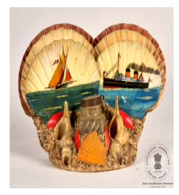

🔇 Is bhasha me is vastu ka audio abhi uplabdh nahi hai.
6. LXXVII - 349: कागज़ रखने का स्टैंड

6. LXXVII - 349
यह कागज़ रखने का स्टैंड मदर ऑफ पर्ल (मोती की परत) से बना है। इसमें एक स्याही की शीशी है। इसमें छह कैलिको शंख लगे हुए हैं। सामने के चार कैलिको शंख क्रीम रंग के हैं और पीछे के दो कैलिको शंख भूरे रंग के हैं। इन कैलिको शंखों पर समुद्री दृश्य चित्रित हैं। एक पर पाल वाली नाव (सेल बोट) और दूसरे पर एक बड़ा जहाज़ बना है। नाव की पालें भूरे रंग की हैं और जहाज़ काले रंग का है। जहाज़ के ऊपर बनी पाइप से धुआँ निकलता हुआ दिखाया गया है। कैलिको शंखों के सामने काले ढक्कन वाली एक स्याही की शीशी रखी हुई है। समुद्र को नीले रंग में चित्रित किया गया है। यह मदर ऑफ पर्ल का कागज़ रखने का स्टैंड कलाकार की सुंदर कारीगरी को दर्शाता है। यह मदर ऑफ पर्ल का कागज़ रखने का स्टैंड भारत का है और 20वीं शताब्दी का है।
6. LXXVII - 349: कागज़ रखने का स्टैंड
6. LXXVII - 349
यह कागज़ रखने का स्टैंड मदर ऑफ पर्ल (मोती की परत) से बना है। इसमें एक स्याही की शीशी है। इसमें छह कैलिको शंख लगे हुए हैं। सामने के चार कैलिको शंख क्रीम रंग के हैं और पीछे के दो कैलिको शंख भूरे रंग के हैं। इन कैलिको शंखों पर समुद्री दृश्य चित्रित हैं। एक पर पाल वाली नाव (सेल बोट) और दूसरे पर एक बड़ा जहाज़ बना है। नाव की पालें भूरे रंग की हैं और जहाज़ काले रंग का है। जहाज़ के ऊपर बनी पाइप से धुआँ निकलता हुआ दिखाया गया है। कैलिको शंखों के सामने काले ढक्कन वाली एक स्याही की शीशी रखी हुई है। समुद्र को नीले रंग में चित्रित किया गया है। यह मदर ऑफ पर्ल का कागज़ रखने का स्टैंड कलाकार की सुंदर कारीगरी को दर्शाता है। यह मदर ऑफ पर्ल का कागज़ रखने का स्टैंड भारत का है और 20वीं शताब्दी का है।
6. LXXVII-349: పేపర్ స్టాండ్
6. LXXVII-349
ఈ పేపర్ స్టాండ్ను 20వ శతాబ్దానికి చెందిన భారతీయ కళాకృతులలో ఒకటిగా, ముత్యపు చిప్ప తో తయారు చేశారు. ఈ స్టాండ్పై మొత్తం ఆరు క్యాలికో చిప్పలు ఉన్నాయి; ముందు నాలుగు చిప్పలు క్రీమ్ రంగులో మరియు వెనుక రెండు గోధుమ రంగులో ఉన్నాయి. ఈ చిప్పలపై సముద్ర దృశ్యాలు పెయింట్ చేయబడ్డాయి: ఒకటి పడవ మరియు మరొకటి పెద్ద ఓడ. పడవ తెరచాపలు గోధుమ రంగులో, ఓడ నలుపు రంగులో ఉన్నాయి, మరియు ఓడ పైభాగంలోని పైపు నుండి పొగ వస్తోంది. చిప్పల ముందు నలుపు రంగు మూత ఉన్న సిరా సీసా ఉంది. మహాసముద్రం నీలం రంగులో పెయింట్ చేయబడింది. ఈ ముత్యపు చిప్ప పేపర్ స్టాండ్ కళాకారుడి గొప్ప పనితనాన్ని స్పష్టంగా తెలియజేస్తుంది.
6. ایل ایکس ایکسVII-349: پیپراسٹینڈ
6. ایل ایکس ایکسVII-349
یہپیپراسٹینڈمدرآفپرلیعنیسیپیکےموتیسےتیارکیاگیاہے۔اسپرایکسیاہیکیدواترکھیگئیہے۔اساسٹینڈپرچھسمندریسیپیاںجڑیہوئیہیں۔آگےکیچارسیپیاںہلکا زردی مائل سفیدرنگکیہیں،جبکہپیچھےکیدوبھورےرنگکیہیں۔انسیپیوںپرسمندریمناظرپینٹکیےگئےہیں, ایکپربادبانیکشتیاوردوسریپربڑاجہازدکھایاگیاہے۔کشتیکےبادبانبھورےرنگمیںاورجہازسیاہرنگمیںبنائےگئےہیں۔جہازکےاوپروالےپائپسےدھواںنکلتاہوادکھایاگیاہے۔سیپیوںکےسامنےکالیٹوپیوالیسیاہیکیدواترکھیگئیہے۔پسمنظرمیںنیلاسمندرپینٹکیاگیاہے۔یہمدرآفپرلسےبناہواپیپراسٹینڈفنکارکیخوبصورتدستکاریاورفن کی نزاکتکوظاہرکرتاہے۔یہہندوستانسےتعلقرکھتاہےاوربیسویںصدیکاہے۔
7. اے سی کیو-62-211-3: دس چھوٹے پرندے
دس پرندوں میں سے چار پرندے ٹیلوں کی چوٹی پر بیٹھے ہوئے دکھائے گئے ہیں۔مینی ایچر پینٹنگایک ایسافن ہے جس میں نہایت باریک اور دقیق تفصیل کے ساتھ چھوٹے سائز کے فن پارے بنائے جاتے ہیں ۔ اکثر یہ تصویری خاکے یا مناظر ہوتے ہیں، جن کا سائز عموماً پچیس مربع انچ سے زیادہ نہیں ہوتا۔مینی ایچر پینٹنگ کی خصوصیت اس کی نہایت باریک کاریگری نفاست اور درستگی ہے، جس کے لیے اعلیٰ مہارت اور بے مثال صبر درکار ہوتا ہے۔ یہ تصویریں چمڑے کی جھلی، تیار شدہ کارڈ، تانبے، ہاتھی دانت پر نہایت باریک برش اور مخصوص رنگوں کے ذریعے بنائی جاتی تھیں۔ برصغیر میں اس فن مصوری کا آغاز دسویں صدی میں ہوا۔ مینی ایچر پینٹنگ آج بھی ایک نفیس فن کے طور پر رائج ہے، جہاں فنکار مختلف اسالیب اور تکنیکوں کے ساتھ تجربات کر رہے ہیں۔ اس کے ساتھ ساتھ یہ فن بہت سے افراد کے لیے ایک مقبول مشغلہ بھی ہے۔ یہ مینی ایچر پینٹنگ بھارت سے تعلق رکھتی ہے اور اس کا تعلق بیسویں صدی سے ہے
7. اے سی کیو-62-211-3: دس چھوٹے پرندے
دس پرندوں میں سے چار پرندے ٹیلوں کی چوٹی پر بیٹھے ہوئے دکھائے گئے ہیں۔مینی ایچر پینٹنگایک ایسافن ہے جس میں نہایت باریک اور دقیق تفصیل کے ساتھ چھوٹے سائز کے فن پارے بنائے جاتے ہیں ۔ اکثر یہ تصویری خاکے یا مناظر ہوتے ہیں، جن کا سائز عموماً پچیس مربع انچ سے زیادہ نہیں ہوتا۔مینی ایچر پینٹنگ کی خصوصیت اس کی نہایت باریک کاریگری نفاست اور درستگی ہے، جس کے لیے اعلیٰ مہارت اور بے مثال صبر درکار ہوتا ہے۔ یہ تصویریں چمڑے کی جھلی، تیار شدہ کارڈ، تانبے، ہاتھی دانت پر نہایت باریک برش اور مخصوص رنگوں کے ذریعے بنائی جاتی تھیں۔ برصغیر میں اس فن مصوری کا آغاز دسویں صدی میں ہوا۔ مینی ایچر پینٹنگ آج بھی ایک نفیس فن کے طور پر رائج ہے، جہاں فنکار مختلف اسالیب اور تکنیکوں کے ساتھ تجربات کر رہے ہیں۔ اس کے ساتھ ساتھ یہ فن بہت سے افراد کے لیے ایک مقبول مشغلہ بھی ہے۔ یہ مینی ایچر پینٹنگ بھارت سے تعلق رکھتی ہے اور اس کا تعلق بیسویں صدی سے ہے
6. LXXVII - 349: কাগজ রাখার স্ট্যান্ড
6. LXXVII - 349
এই কাগজ রাখার স্ট্যান্ডটি মাদার অফ পার্ল (মুক্তার স্তর) দিয়ে তৈরি। এতে একটি কালির শিশি রয়েছে। এতে ছয়টি ক্যালিকো শঙ্খ লাগানো আছে। সামনের চারটি ক্যালিকো শঙ্খ ক্রিম রঙের এবং পিছনের দুটি ক্যালিকো শঙ্খ বাদামি রঙের। এই ক্যালিকো শঙ্খগুলির উপর সমুদ্রের দৃশ্য চিত্রিত রয়েছে। একটিতে পালতোলা নৌকা এবং অন্যটিতে একটি বড় জাহাজ আঁকা রয়েছে। নৌকার পাল বাদামি রঙের এবং জাহাজ কালো রঙের। জাহাজের উপরে তৈরি পাইপ থেকে ধোঁয়া বেরোতে দেখানো হয়েছে। ক্যালিকো শঙ্খগুলির সামনে কালো ঢাকনাযুক্ত একটি কালির শিশি রাখা রয়েছে। সমুদ্রকে নীল রঙে চিত্রিত করা হয়েছে। মাদার অফ পার্লের এই কাগজ রাখার স্ট্যান্ডটি শিল্পীর সুন্দর কারিগরি প্রকাশ করে। মাদার অফ পার্লের এই কাগজ রাখার স্ট্যান্ডটি ভারতের এবং ২০শ শতাব্দীর।
6. LXXVII-349: પેપર સ્ટેન્ડ
6. LXXVII-349
આ પેપર સ્ટેન્ડ મોતીની છીપથી બનેલું છે. તેમાં સહીની બાટલી છે. તેમાં છ કેલિકો છીપ છે. આગળની ચાર કેલિકો છીપ ક્રીમ રંગની છે, અને પાછળના બે કેલિકો છીપ ભૂરા રંગના છે. કેલિકો શેલ સમુદ્રના દ્રશ્યો દર્શાવે છે. એકમાં સઢવાળી હોડી અને બીજીમાં મોટું વહાણ દર્શાવવામાં આવ્યું છે. બોટના સઢ ભૂરા રંગના છે, અને વહાણ કાળા રંગનું છે. વહાણની ટોચ પર પાઇપમાંથી ધુમાડો નીકળી રહ્યો છે. કેલિકો છીપની સામે કાળા ઢાંકણવાળી સહીની બાટલી છે. સમુદ્ર વાદળી રંગનો દર્શાવવામાં આવ્યો છે. આ મોતીની છીપના પેપર સ્ટેન્ડ કલાકારની કળાને પ્રતિબિંબિત કરે છે. આ મોતીની છીપનું પેપર સ્ટેન્ડ ભારતનું છે અને 20મી સદીનું છે.
6. LXXVII-349: ಪೇಪರ್ ಸ್ಟ್ಯಾಂಡ್
6. LXXVII-349
ಮುತ್ತಿನ ಚಿಪ್ಪಿನ ಒಳಪದರವಾದ 'ಮದರ್ ಆಫ್ ಪರ್ಲ್'ನಿಂದ ಮಾಡಲಾದ ಪೇಪರ್ ಸ್ಟ್ಯಾಂಡ್ನ ಅದ್ಭುತ ಕಲಾಕೃತಿ ಇದಾಗಿದೆ. ಇದುಒಂದು ಶಾಯಿಯ ಸೀಸೆಯನ್ನು ಹಾಗೂ ಆರು 'ಕ್ಯಾಲಿಕೊ' ಚಿಪ್ಪುಗಳನ್ನು ಹೊಂದಿದೆ.ಇದರಮುಂಭಾಗದ ನಾಲ್ಕು ಕ್ಯಾಲಿಕೊ ಚಿಪ್ಪುಗಳು ಕೆನೆ ಬಣ್ಣದಲ್ಲಿದ್ದರೆ, ಹಿಂಭಾಗದ ಎರಡು ಚಿಪ್ಪುಗಳು ಕಂದು ಬಣ್ಣದಲ್ಲಿವೆ. ಈ ಚಿಪ್ಪುಗಳ ಮೇಲೆ ಸಮುದ್ರದ ದೃಶ್ಯಗಳನ್ನು ಅತ್ಯಂತ ಸುಂದರವಾಗಿ ಬಿಡಿಸಲಾಗಿದೆ. ಒಂದರಲ್ಲಿ ಹಾಯಿದೋಣಿಯ ದೃಶ್ಯವಿದ್ದರೆ, ಮತ್ತೊಂದರಲ್ಲಿ ದೊಡ್ಡ ಹಡಗಿನ ದೃಶ್ಯವಿದೆ. ದೋಣಿಯ ಪಟಗಳು ಕಂದು ಬಣ್ಣದಲ್ಲಿದ್ದು, ಹಡಗು ಕಪ್ಪು ಬಣ್ಣದಲ್ಲಿದೆ. ಹಡಗಿನ ಮೇಲ್ಭಾಗದಲ್ಲಿರುವ ಕೊಳವೆಯಿಂದ ಹೊಗೆ ಹೊರಬರುತ್ತಿರುವಂತೆ ಚಿತ್ರಿಸಲಾಗಿದೆ ಹಾಗೂ ಸಮುದ್ರವನ್ನು ನೀಲಿ ಬಣ್ಣದಲ್ಲಿ ಕಲಾತ್ಮಕವಾಗಿ ಬಿಡಿಸಲಾಗಿದೆ.ಈ ಕ್ಯಾಲಿಕೊ ಚಿಪ್ಪುಗಳ ಮುಂಭಾಗದಲ್ಲಿ, ಕಪ್ಪು ಬಣ್ಣದ ಮುಚ್ಚಳವನ್ನು ಹೊಂದಿರುವ ಶಾಯಿಯ ಸೀಸೆಯಿದೆ. 'ಮದರ್ ಆಫ್ ಪರ್ಲ್'ನಿಂದ ಮಾಡಲಾದ ಈ ಪೇಪರ್ ಸ್ಟ್ಯಾಂಡ್, ಕಲಾವಿದನ ಅದ್ಭುತ ಕೌಶಲ್ಯವನ್ನು ಅನಾವರಣಗೊಳಿಸುತ್ತದೆ.ಭಾರತದಲ್ಲಿಯೇ ರೂಪುಗೊಂಡಿರುವ ಈ ಸುಂದರ ಕಲಾಕೃತಿಯು 20ನೇ ಶತಮಾನದಷ್ಟು ಹಳೆಯದಾಗಿದೆ.
6. LXXVII-349: ପେପର୍ ଷ୍ଟାଣ୍ଡ
6. LXXVII-349
ଏହି କାଗଜ ଷ୍ଟାଣ୍ଡ୍ଟି ମୁକ୍ତାଖୋଳରେ ତିଆରିହୋଇଛି। ଏଥିରେ ଗୋଟିଏ କାଳୀରଖିବା ପାଇଁ ବୋତଲ ରହିଛି। ଛଅଟି କାଲିକୋ ସେଲ୍ରେ ଏହା ନିର୍ମିତହୋଇଛି। ଆଗ ଚାରୋଟି କାଲିକୋ ସେଲ୍ ଧଳା ରଙ୍ଗର ଏବଂ ପଛ ଦୁଇଟି ମାଟିଆ ରଙ୍ଗରଅଟେ। କାଲିକୋ ସେଲ୍ରେ ସମୁଦ୍ରର ଦୃଶ୍ୟ ଚିତ୍ରିତହୋଇଛି। ଗୋଟିଏରେନୌବାହନ ଡଙ୍ଗାଟିଏ, ଅନ୍ୟଟିରେଗୋଟିଏ ବଡ଼ ଜାହାଜ ଅଙ୍କନ କରାଯାଇଛି। ଡଙ୍ଗାର ପାଲକୁ ମାଟିଆ ରଙ୍ଗରେ ଏବଂ ଜାହାଜଟିକୁ କଳାରଙ୍ଗରେ ରଙ୍ଗିତ କରାହୋଇଛି। ଜାହାଜ ଉପରେ ଥିବା ପାଇପ୍ ରୁ ଧୂଆଁ ବାହାରୁଥିବାର ଦୃଶ୍ୟ ଦେଖିପାରିବା। କାଲିକୋ ଖୋଳ ସାମ୍ନାରେ କଳା ଢାଙ୍କୁଣୀ ସହିତ ଗୋଟିଏ କାଳୀ ବୋତଲ ରଖାଯାଇଛି। ସମୁଦ୍ରକୁ ନୀଳ ରଙ୍ଗରେ ଚିତ୍ରିତ କରାଯାଇଛି। ଏହି ମୁକ୍ତା ଖୋଳରେ ନିର୍ମିତ ପେପର୍ ଷ୍ଟାଣ୍ଡ୍ କଳାକାରଙ୍କ କାର୍ଯ୍ୟରନିକ୍ଷୁଣତାକୁପ୍ରକାଶ କରିଥାଏ। ଏହା ଭାରତରେନିର୍ମିତ ଏବଂ ଏହାର ଇତିହାସ ବିଂଶ ଶତାବ୍ଦୀରଅଟେ।
Item 6
6. LXXVII - 349: പേപ്പർസ്റ്റാൻഡ്
6. LXXVII - 349
മുത്തുച്ചിപ്പികൊണ്ട്നിർമ്മിച്ചഒരുപേപ്പർ സ്റ്റാൻഡ്. ഇതിൽ ഒരുമഷിപ്പാത്രവുമുണ്ട് .ആറ്കാലിക്കോചിപ്പികളാണ്ഇതിൽ ഘടിപ്പിച്ചിരിക്കുന്നത്. മുൻഭാഗത്തുള്ളനാല്ചിപ്പികൾ ക്രീംനിറത്തിലും, പിന്നിലുള്ളരണ്ട്ചിപ്പികൾ തവിട്ട്നിറത്തിലുമാണ്.
ഈ ചിപ്പികളിൽ കടൽദൃശ്യങ്ങൾ ചിത്രീകരിച്ചിട്ടുണ്ട്. ഒന്നിൽ ഒരുപായ്ക്കപ്പലുംമറ്റൊന്നിൽ ഒരുവലിയകപ്പലുംകാണാം. പായ്ക്കപ്പലിന്റെപായ്കൾക്ക്തവിട്ട്നിറവുംവലിയകപ്പലിന്കറുപ്പ്നിറവുമാണ്നൽകിയിരിക്കുന്നത്. കപ്പലിന്മുകളിലുള്ളപുകക്കുഴലിലൂടെപുകപുറത്തേക്ക്വരുന്നത്കാണാം. ചിപ്പികൾക്ക്മുന്നിലായികറുത്തമൂടിയുള്ളഒരുമഷിപ്പാത്രമുണ്ട്. നീലനിറത്തിലാണ്സമുദ്രംചിത്രീകരിച്ചിരിക്കുന്നത്. കലാകാരന്റെകരവിരുത്വിളിച്ചോതുന്ന ഈ മുത്തുച്ചിപ്പിപേപ്പർ സ്റ്റാൻഡ്ഇരുപതാംനൂറ്റാണ്ടിൽ ഇന്ത്യയിൽ നിർമ്മിക്കപ്പെട്ടതാണ്.
ഈ ചിപ്പികളിൽ കടൽദൃശ്യങ്ങൾ ചിത്രീകരിച്ചിട്ടുണ്ട്. ഒന്നിൽ ഒരുപായ്ക്കപ്പലുംമറ്റൊന്നിൽ ഒരുവലിയകപ്പലുംകാണാം. പായ്ക്കപ്പലിന്റെപായ്കൾക്ക്തവിട്ട്നിറവുംവലിയകപ്പലിന്കറുപ്പ്നിറവുമാണ്നൽകിയിരിക്കുന്നത്. കപ്പലിന്മുകളിലുള്ളപുകക്കുഴലിലൂടെപുകപുറത്തേക്ക്വരുന്നത്കാണാം. ചിപ്പികൾക്ക്മുന്നിലായികറുത്തമൂടിയുള്ളഒരുമഷിപ്പാത്രമുണ്ട്. നീലനിറത്തിലാണ്സമുദ്രംചിത്രീകരിച്ചിരിക്കുന്നത്. കലാകാരന്റെകരവിരുത്വിളിച്ചോതുന്ന ഈ മുത്തുച്ചിപ്പിപേപ്പർ സ്റ്റാൻഡ്ഇരുപതാംനൂറ്റാണ്ടിൽ ഇന്ത്യയിൽ നിർമ്മിക്കപ്പെട്ടതാണ്.